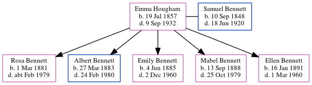

Emma Bennett (née Hougham) 1857 - 1932
[ Home ] | [ Calendar ] | [ Surnames Index ] | [ Errors ] | [ Family History ]Emma Hougham, the wife of Samuel Bennett (the three times great-uncle of Nigel Horne), was born in Preston, Kent, England on 19 Jul 18571,2,3,4,5,6,7,8,9,10, was baptised in Elmstone, Kent, England on 23 Aug 1857 and married Samuel (a farm servant with whom she had 5 children: Rosa, Albert, Emily, Mabel H and Ellen) at St Mildred's Church in Preston on 17 May 188011.
During her life, she was living in Ash, Kent, England in 18611; in Wickhambreaux, Kent, England in 18712; at Ashen Trees, Wingham, Kent on 3 Apr 188114; at Station Road, Bekesbourne, Kent on 5 Apr 189112; at Netherton, Sibertswold, Kent on 31 Mar 190113; and at Whittington Terrace, Sibertswold, Kent on 2 Apr 19116.
She died on 9 Sept 1932 in Wadhurst, Sussex, England9 (age at Death: 75).
Children
- Rosa was born on 1 Mar 1881
- Albert was born on 27 Mar 1883
- Emily was born on 4 Jun 1885
- Mabel H was born on 13 Sept 1888
- Ellen was born on 16 Jan 1891
Citations
- 1861 England Census Online publication - Provo, UT, USA: The Generations Network, Inc., 2005.Original data - Census Returns of England and Wales, 1861. Kew, Surrey, England: The National Archives of the UK (TNA): Public Record Office (PRO), 1861. Data imaged from the National (Age: 3; Relation: Daughter)
- 1871 England Census Online publication - Provo, UT, USA: The Generations Network, Inc., 2004.Original data - Census Returns of England and Wales, 1871. Kew, Surrey, England: The National Archives of the UK (TNA): Public Record Office (PRO), 1871. Data imaged from the National (Age: 13; Relation: Servant)
- 1881 England Census Online publication - Provo, UT, USA: The Generations Network, Inc., 2004. 1881 British Isles Census Index provided by The Church of Jesus Christ of Latter-day Saints © Copyright 1999 Intellectual Reserve, Inc. All rights reserved. All use is subject to the
- 1891 England Census Online publication - Provo, UT, USA: The Generations Network, Inc., 2005.Original data - Census Returns of England and Wales, 1891. Kew, Surrey, England: The National Archives of the UK (TNA): Public Record Office (PRO), 1891. Data imaged from The National
- 1901 England Census Online publication - Provo, UT, USA: The Generations Network, Inc., 2005.Original data - Census Returns of England and Wales, 1901. Kew, Surrey, England: The National Archives of the UK (TNA): Public Record Office (PRO), 1901. Data imaged from the National
- 1911 Census for England & Wales - Findmypast (was age 53 and the wife of the head of the household)
- 1911 England Census Online publication - Provo, UT, USA: Ancestry.com Operations, Inc., 2011.Original data - Census Returns of England and Wales, 1911. Kew, Surrey, England: The National Archives of the UK (TNA), 1911. Data imaged from the National Archives, London, England.
- England & Wales births 1837-2006 - Findmypast
- England & Wales, Death Index: 1984-2005 Online publication - Provo, UT, USA: The Generations Network, Inc., 2007.Original data - General Register Office. England and Wales Civil Registration Indexes. London, England: General Register Office. © Crown copyright. Published by permission of the Cont
- England & Wales, FreeBMD Birth Index, 1837-1915 Online publication - Provo, UT, USA: The Generations Network, Inc., 2006.Original data - General Register Office. England and Wales Civil Registration Indexes. London, England: General Register Office. © Crown copyright. Published by permission of the Cont
- England & Wales, FreeBMD Marriage Index: 1837-1915 Online publication - Provo, UT, USA: The Generations Network, Inc., 2006.Original data - General Register Office. England and Wales Civil Registration Indexes. London, England: General Register Office. © Crown copyright. Published by permission of the Cont
- 1891 England, Wales & Scotland Census - Findmypast (was age 38 and the wife of the head of the household)
- 1901 England, Wales & Scotland Census - Findmypast (was age 43 and the wife of the head of the household)
- 1881 England, Wales & Scotland Census - Findmypast (was age 23 and the wife of the head of the household)
Media
England & Wales marriages 1837-2008 - BMD/M/1880/2/AZ/000127/144
Canterbury Marriages - GBPRS/CANT/M/97051028/2
England & Wales births 1837-2006 - BMD/B/1857/3/GP/000418/035
1901 England, Wales & Scotland Census - GBC/1901/0005528264
1911 Census for England & Wales - GBC/1911/RG14/04583/0037/2
Family Tree
Map
Generated by ged2site. Last updated on Jul 3, 2024
Known Issues
Baptism information not used to determine a parent
No records of living with anyone